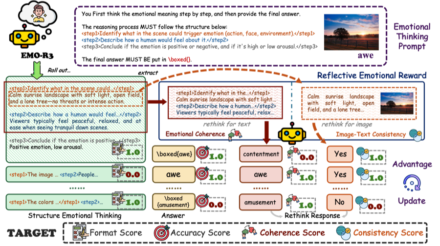
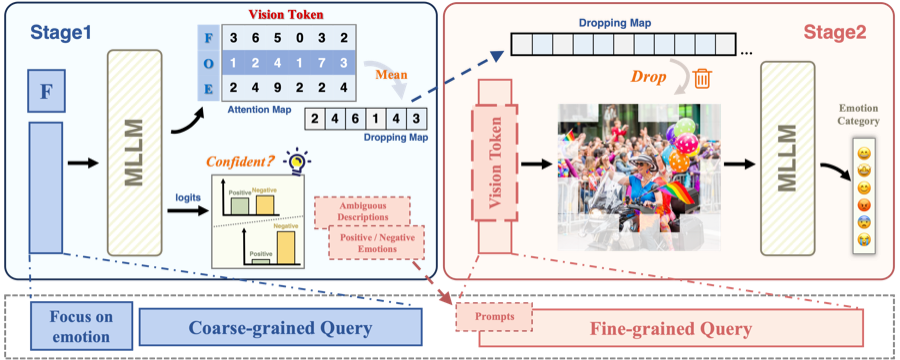
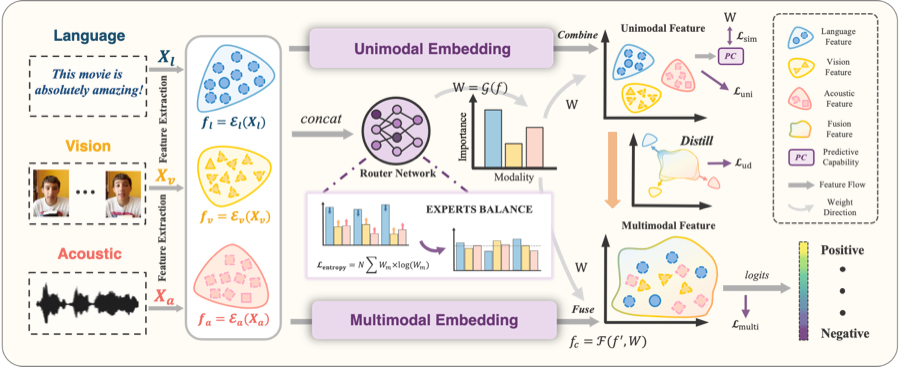
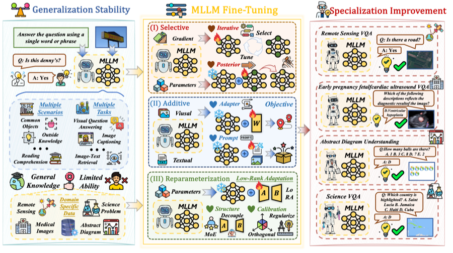

EMO-R3: Reflective Reinforcement Learning for Emotional Reasoning in Multimodal Large Language Models
CVPR26 HighlightYiyang Fang, Wenke Huang, Pei Fu, Yihao Yang, Kehua Su, Zhenbo Luo, Jian Luan, Mang Ye
Incoming PhD · Department of Computer Science and Engineering, HKUST
I am an incoming Ph.D. student in the Department of Computer Science and Engineering at the Hong Kong University of Science and Technology (HKUST), advised by Yi R. (May) Fung. I received my master's degree from the School of Computer Science at Wuhan University in 2026, under the supervision of Mang Ye. I received my bachelor's degree from the School of Computer Science and Technology at Shandong University in 2024.
My research mainly focuses on Multimodal Emotion Recognition and Multimodal Large Language Models. If you are interested in collaborating with me, feel free to contact me via email.
Master Student, School of Computer Science
Bachelor, School of Computer Science and Technology
Understanding emotional cues across visual, textual, and multimodal signals.
Improving perception, reasoning, and adaptation in multimodal foundation models.
† equal contribution

Yiyang Fang, Wenke Huang, Pei Fu, Yihao Yang, Kehua Su, Zhenbo Luo, Jian Luan, Mang Ye

Yiyang Fang, Jian Liang, Wenke Huang, He Li, Kehua Su, Mang Ye

Yiyang Fang, Wenke Huang, Guancheng Wan, Kehua Su, Mang Ye

Wenke Huang, Jian Liang, Xianda Guo, Yiyang Fang†, Guancheng Wan, Xuankun Rong, Chi Wen, Zekun Shi, Qingyun Li, Didi Zhu, Yanbiao Ma, Ke Liang, Bin Yang, He Li, Jiawei Shao, Mang Ye, Bo Du